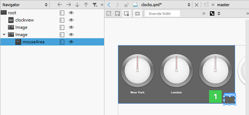

Managing Item Hierarchy
The Navigator displays the items in the current QML file and their relationships. Items (1) are listed in a tree structure, below their parent (2).

You can select items in the Navigator to edit their properties in the Properties pane. Items can access the properties of their parent item. To select items on the canvas, right-click an item, and select another type in the context menu.
Typically, child items are located within the parent item on the canvas. However, they do not necessarily have to fit inside the parent item. For example, you might want to make a mouse area larger than the rectangle or image beneath it (1).

When you copy an item, all its child items are also copied. When you remove an item, the child items are also removed.
To show and hide items on the canvas when focusing on specific parts of the application, click  . To change the visibility of an item in the application code, select the Visibility check box in the Properties pane or select Edit > Visibility in the context menu.
. To change the visibility of an item in the application code, select the Visibility check box in the Properties pane or select Edit > Visibility in the context menu.
You can also set the Opacity field to 0 to hide items that you want to apply animation to.
As all properties, visibility and opacity are inherited from the parent item. To hide or show child items, edit the properties of the parent item.
To hide invisible items in the navigator, click  (Filter Tree) and select Show only visible items.
(Filter Tree) and select Show only visible items.
To reset item size, position, or anchors, select context menu commands. To change the source of an Image type, select Change Source URL in the context menu.
To view lists of files or projects, instead, select File System, Open Documents, or Projects in the menu. To view several types of content at a time, split the sidebars by clicking the (Split) button.
Setting the Stacking Order
The z property of an Item determines its position in relation to its sibling items in the type hierarchy. By default, items with a higher stacking value are drawn on top of siblings with a lower stacking value. Items with the same stacking value are drawn in the order they are listed, from the last item up.
To move an item to the front or back of all its siblings, right-click it in the navigator or the Form Editor and select Stack (z) > To Front or To Back. To raise or lower the stack value of an item, select Raise or Lower. To remove the z property, select Reset z Property.
You can also use a StackLayout item (Qt Quick Controls) to create a stacked view. For more information, see Using Layouts.
Switching Parent Items
When you drag and drop instances of QML types to the canvas, the new item is added as a child of the item beneath it. When you move items on the canvas, it is not possible to determine whether you want to adjust their position or attach them to a new parent item. Therefore, the parent item is not automatically changed. To change the parent of the item, press down the Shift key before you drag and drop the item into a new position. The topmost item under the cursor becomes the new parent of the item.
You can change the parent of an item also in the Navigator. Drag and drop the item to another position in the tree or use the arrow buttons (1) to move the item in the tree.